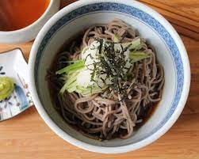

Cold Soba

Description
Cold soba for a hot day!
Ingredients
- 1 package of dried soba noodles
- 1 cup of prepared dashi stock
- 1/4 cup of soy sauce
- 2 tablespoons of mirin
- 1/4 teaspoon white sugar
- 2 tablespoons sesame seeds
<1i>1/2 cup chopped green onions
- 1 sheet nori, cut into thin strips
Steps
- Bring a lightly salted pot of water to a boil. Add soba noodles; cook, stirring occasionally, until tender, 5 to 8 minutes. Drain. Rinse with cold water to speed up cooling process
- Combine dash, soy sauce, mirin, and white sugar in a small saucepan; bring to a boil. Remove from heat and cool to room temperature, about 25 minutes.
- Toss noodles with sesame seeds and divide among 4 serving bowls. Spoon dash sauce over noodles. Top with green onions and nori.